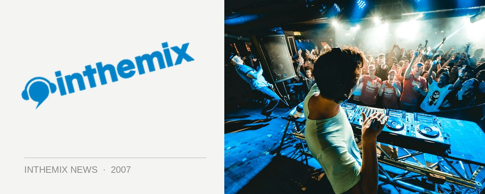

Breaks head BLIM blitzes Australia
BLIM is one of the biggest names in nu-school breaks production, and is about to embark on a club tour around the country.
If you take a look at any of the mix compilations from the likes of breaks heavyweights as Meat Katie, Elite Force and whatever other names you could throw in there, you’d most certainly see a contribution from BLIM. Most remembered for his smashing collaboration with Rennie Pilgrim Two Freaks, he’s done work for seminal breaks labels like Marine Parade, TCR and his own Track Recordings, as well making as records under the pseudonyms High Prime (with Freq Nasty ) and KASHA (with Chris Carter ).
Catch BLIM at the following dates:
Thu 1st March: Adelaide, Electric Light Hotel
Fri 2nd March: Sydney, Chinese Laundry
Sat 10th March: Melbourne, Revolver
Thu 15th March: Byron Bay, Play
Fri 16th March: Perth, Heat
Sat 17th March: Townsville, Bombay Rock
Fri 23rd March: Brisbane, GPO Hotel